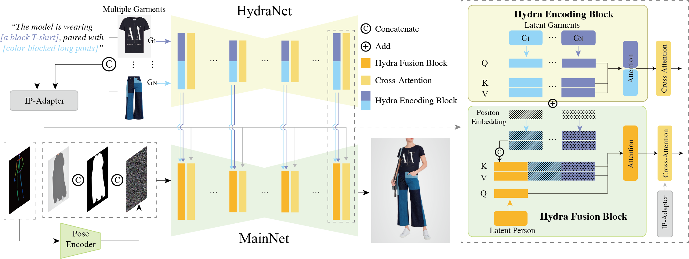

Abstract
While image-based virtual try-on has made significant strides, emerging approaches still fall short of delivering high-fidelity and robust fitting images across various scenarios, as their models suffer from issues of ill-fitted garment styles and quality degrading during the training process, not to mention the lack of support for various combinations of attire. Therefore, we first propose a lightweight, scalable, operator known as Hydra Block for attire combinations. This is achieved through a parallel attention mechanism that facilitates the feature injection of multiple garments from conditionally encoded branches into the main network. Secondly, to significantly enhance the model's robustness and expressiveness in real-world scenarios, we evolve its potential across diverse settings by synthesizing the residuals of multiple models, as well as implementing a mask region boost strategy to overcome the instability caused by information leakage in existing models.
Equipped with the above design, AnyFit surpasses all baselines on high-resolution benchmarks and real-world data by a large gap, excelling in producing well-fitting garments replete with photorealistic and rich details. Furthermore, AnyFit’s impressive performance on high-fidelity virtual try-ons in any scenario from any image, paves a new path for future research within the fashion community.
The good properties of AnyFit
SCALABILITY: AnyFit supports multi-condition injection, allowing for easy expansion to more applications, such as mixing and matching tops and bottoms, layering inner and outer garments, etc.
ROBUSTNESS: Given the diverse scenarios encountered in e-commerce settings, AnyFit generates authentic fabric textures and natural lighting, reproducing the details of the target clothing (e.g., logos, patterns, texts and strips) stably and accurately.
AnyFit shows superior try-ons for any combination of attire across any scenario. It supports various of input types including shop-to-model, model-to-model, pattern-to-street, etc.

How does it work?
As illustrated in the figure, AnyFit mainly consists of two isomorphic U-Nets, namely HydraNet and MainNet. The former is tasked with extracting fine-grained clothing features, while the latter is responsible for generating try-ons.
Scalability: A hallmark of AnyFit is its innovative introduction of the Hydra Encoding Block that only parallelizes attention matrices within a sharing HydraNet, enabling effortless expansion to any quantity of conditions with only 8\% increase in parameters for each additional branch.
Robustness: Observations indicate a noticeable reduction in the robustness and quality of images generated by existing Virtual Try-On works. We present the Prior Model Evolution strategy. This innovative approach involves merging parameter variations within a model family, enabling the independent evolution of multiple capabilities of the base model. Furthermore, we introduce the Adaptive Mask Boost to further enhance the fit of the attire as a bonus. It allows the model to autonomously understand the overall shape of the clothing, which emancipates the model from previous reliance on hints of masks derived from garments.
Single-garment try-on
AnyFit excels in retaining intricate pattern details and shows the ability of filling in inner garments or unzips clothing based on posture automatically.


Multi-garment try-on
AnyFit enables users to provide upper- and down-clothes simultaneously and generates the try-on results in one pass.
The role of text prompt in AnyFit
In fact, we have discovered that text plays a certain role in controlling the overall try-on style. As show in the above figure, by adjusting the prompt, AnyFit is able to achieve variations in Virtual Try-On apparel styles.